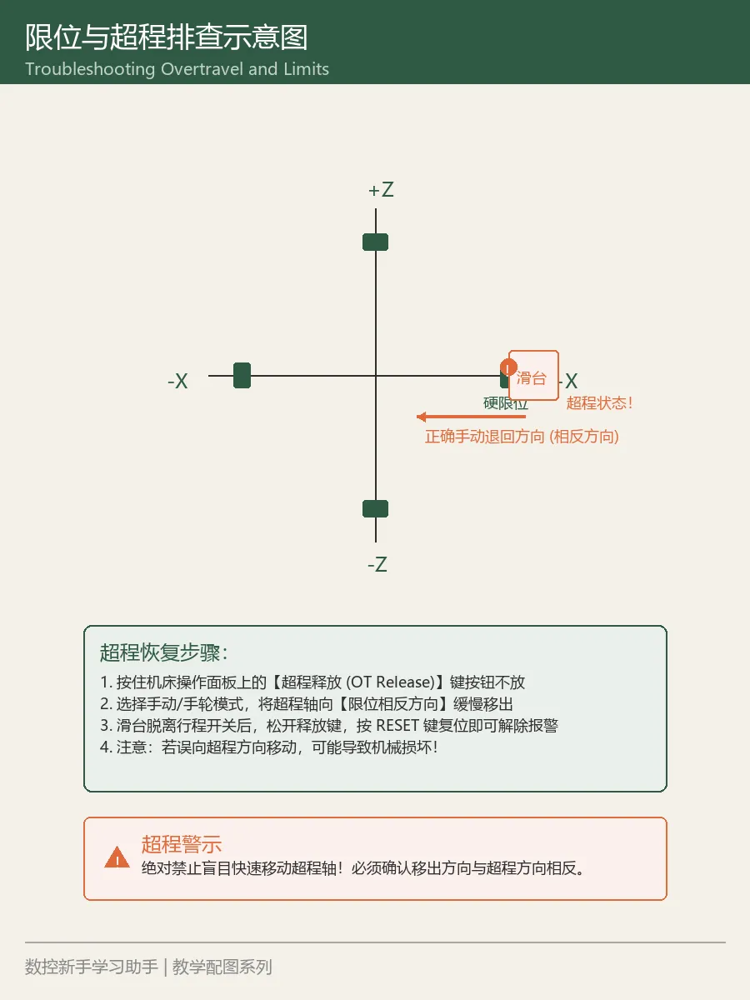
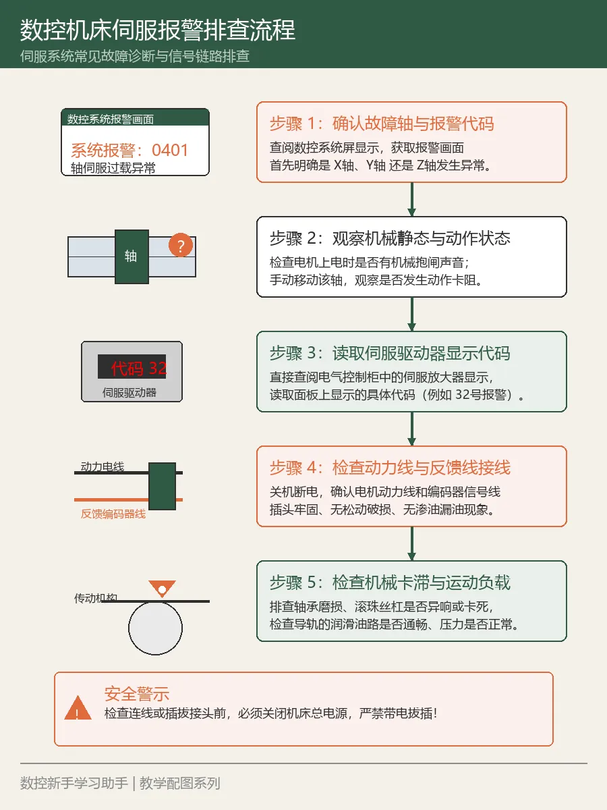
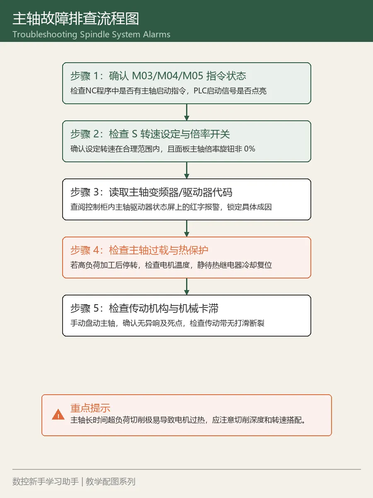
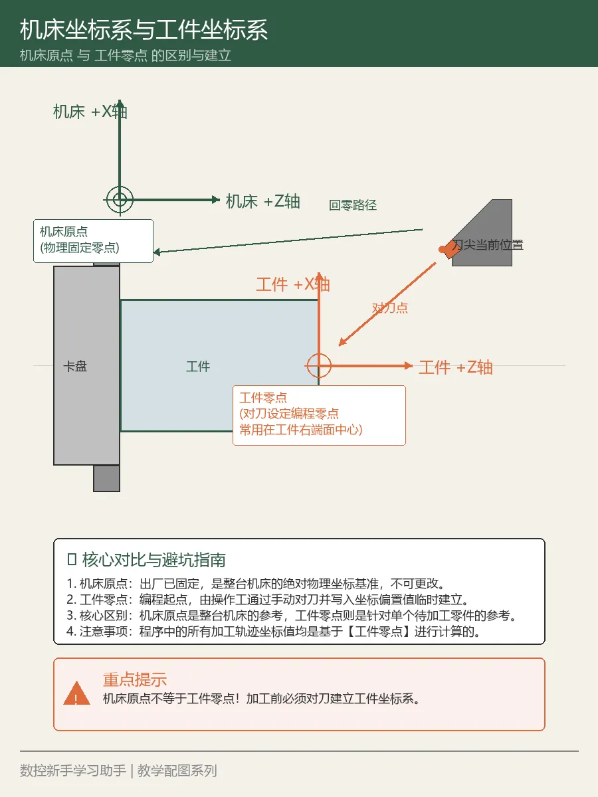
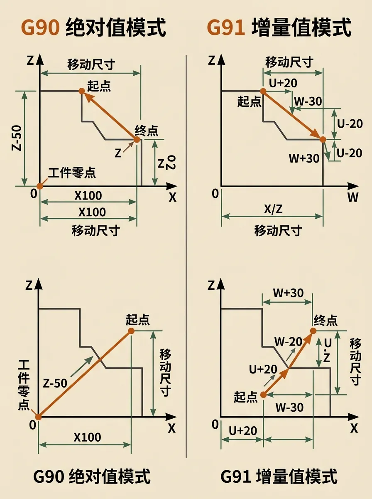
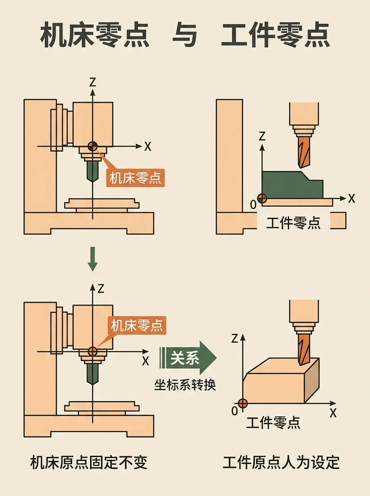

新手学习
从零开始，闯关式学习数控编程
→ 开始学习CNC ENGINEER WORKBENCH
专业图文资料库 · 智能学习路径 · 实时参数换算
从零开始，闯关式学习数控编程
→ 开始学习G代码M代码速查，含格式和案例
→ 查询代码报警代码查询，故障原因和解决方法
→ 查报警机床参数、工艺参数快速检索
→ 查参数刀具选型、切削参数、加工工艺
→ 查工艺线速度、进给、螺距等参数计算
→ 打开计算器输入G代码、报警号、关键词快速定位
FEATURED IMAGES

这张图已经接进网站图库，点进去可以继续看更多图卡。

这张图已经接进网站图库，点进去可以继续看更多图卡。

这张图已经接进网站图库，点进去可以继续看更多图卡。

这张图已经接进网站图库，点进去可以继续看更多图卡。

这张图已经接进网站图库，点进去可以继续看更多图卡。

这张图已经接进网站图库，点进去可以继续看更多图卡。
该分类暂无 FAQ。
KNOWLEDGE MAP
可视化知识结构，快速定位学习方向与路径
正在加载知识地图...
如果数据文件就绪，这里会显示完整的知识树结构闯关式学习
按顺序闯关，从认识图纸到独立编程。每关 5-10 分钟，边学边练。
看懂图纸最基本的符号，知道圆、孔、台阶怎么标注。不求全懂，先认识常见符号。
认识 X、Y、Z 三个轴，明白正负方向。机床坐标系是整个编程的地基。
回零（回参考点）是机床找到自己绝对位置的动作。不回零，后面全是空谈。
对刀 + 工件坐标系（G54-G59）。这是新手最大的坎，跨过去就入门了。
Z 轴对不好，刀具直接撞工件或台面。学会试切法、对刀仪法。
铣刀、车刀、钻头分类，刀尖圆弧半径，刀具材料。先认识，再学用。
顺铣、逆铣，左补偿、右补偿。这关系到加工质量和刀具寿命。
主轴转速 S、进给速度 F，线速度 Vc。搞懂关系，才能算参数。
G00 快速定位，G01 直线切削。G00 走的是折线，用错了会撞刀！
X10. 和 X10 差了10倍！小数点忘了打，轻则废件，重则撞机。
绝对值编程（G90）从零点算，增量编程（G91）从当前位置算。搞混了轨迹全错。
固定循环能把 10 行代码压成 1 行。学会 G81/G83，效率直接翻倍。
KNOWLEDGE BASE
DETAIL VIEW
这里会显示核心说明和使用场景
概念和场景优先，参数和代码其次
遇到不懂的代码或参数时快速定位
查到之后要注意的风险点和验证方法
从简单示例开始理解
相关内容的推荐学习顺序
点击按钮加载完整知识库内容
Gemini 图片图卡 (20 张)
这部分专门解决"已经画完了，但网页里根本看不到"的问题。
参数换算
不再在一长页底部翻找，单独做成工作区。
建议转速约 764 rpm
线速度约 125.66 m/min
每分钟进给约 120 mm/min
对应螺距约 1.27 mm
对应直径约 25 mm
本地知识库并入
先把核心数控知识包并入，再按需拆分超大档案，避免一打开就卡死。
来自 `data.js` 和 `kb-extra.js` 的结构化条目。
优先接入真正有用的编程、操作、刀具、故障、案例类知识。
本地完整索引量很大，需要分块接入，不能粗暴整包塞进首页。
分类浏览
不想搜的时候，可以直接按分类点进去。点一下就跳到对应条目区。
当前已并入 475 条。可以直接按这组分类进入工作区继续看。
当前已并入 381 条。可以直接按这组分类进入工作区继续看。
当前已并入 210 条。可以直接按这组分类进入工作区继续看。
当前已并入 202 条。可以直接按这组分类进入工作区继续看。
当前已并入 191 条。可以直接按这组分类进入工作区继续看。
当前已并入 130 条。可以直接按这组分类进入工作区继续看。
当前已并入 122 条。可以直接按这组分类进入工作区继续看。
当前已并入 76 条。可以直接按这组分类进入工作区继续看。
当前已并入 35 条。可以直接按这组分类进入工作区继续看。
当前已并入 33 条。可以直接按这组分类进入工作区继续看。
当前已并入 20 条。可以直接按这组分类进入工作区继续看。
当前已并入 10 条。可以直接按这组分类进入工作区继续看。
当前已并入 9 条。可以直接按这组分类进入工作区继续看。
当前已并入 9 条。可以直接按这组分类进入工作区继续看。
当前已并入 9 条。可以直接按这组分类进入工作区继续看。
当前已并入 9 条。可以直接按这组分类进入工作区继续看。
当前已并入 8 条。可以直接按这组分类进入工作区继续看。
当前已并入 6 条。可以直接按这组分类进入工作区继续看。
最近查看 / 收藏
退出后回来还能继续接着学。
访问控制
这一页现在不只是说明，而是直接给你成品化分享入口。你可以把正式网址或授权链接发给指定的人。
网页会先显示受控访问层。输入邀请码，或者直接通过你发出去的授权链接，才会进入资料区。
你可以只在视频、私信、群或直播里发授权链接。外部人看不到链接，自然就进不来完整内容。
真正强控制要上 Cloudflare Access 或带登录后端。当前这版先把"你发出去的人能直接打开"的正式入口先做稳。